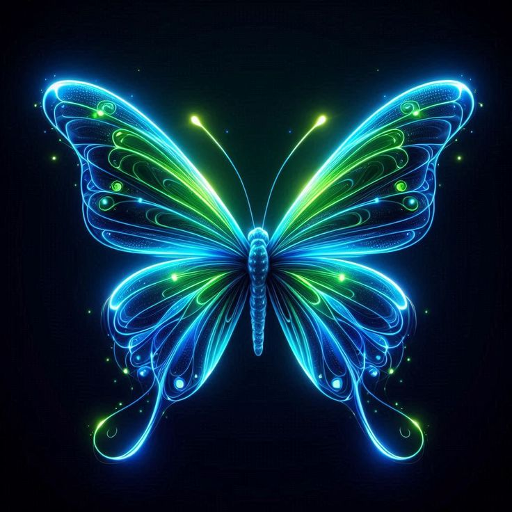

<div style="background-color: #000411; height: 100vh;">
    <div class="d-flex justify-content-between px-5 py-4">
        <div class="text-white match" routerLink="start">
            Match
        </div>
        <div class="d-flex">
            <div class="me-5 text-white text_hert">
                Facebook
            </div>
            <div class="me-5 text-white text_hert">
                Twitter
            </div>
            <mat-icon class="text-white">menu</mat-icon>
        </div>
    </div>
    <div class="d-flex justify-content-center align-items-center">
        <div style="position: relative;">
            
            <div class="jacques-francois-regular" style="">
                insects
            </div>
        </div>
    </div>
    <div class="d-flex justify-content-around flex-wrap">
        <div class="text-white text_one">
            handmate metalwork
        </div>
        <div class="text-white text_two">
            Transform the ordinary into extraordinary <br> with every click.
        </div>
    </div>
    <div class="d-flex justify-content-between align-items-center py-3 mt-4 px-5" >
        <div class="d-flex">
            <div class="text-white text_hert" >
                Share 
            </div>
           
        </div>

        <div>
            <div class="text-white abreto">
                02:45 AM
            </div>
        </div>
        <!-- <div class=" d-flex">
            <div >
             <mat-icon class="text-white">arrow_back</mat-icon>
            </div>
            <div >
             <mat-icon class="text-white">arrow_forward</mat-icon>
            </div>
        </div> -->

        <div class="text-white">
            EN
        </div>
    </div>
</div>
